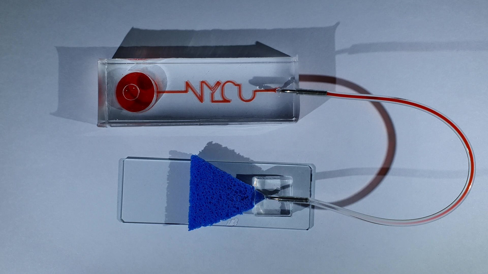

研究產出
碩士研究完成手指進樣、PVA 吸液與 PDMS 封裝的原型研究。

01 / PURPOSE
降低微流體系統對大型外接電動幫浦的依賴，評估便攜式流體驅動原型。
02 / ARCHITECTURE
以手指啟動進樣，降低外部驅動設備需求。
PDMS 封裝形成微流體路徑，連接樣品與吸液端。
PVA 海綿的毛細吸液與高度差共同影響流動。
由液體移動、填充與吸液狀態理解輸送過程，依原實驗條件比較。
03 / WORKFLOW
確認流道與海綿狀態，使用手指啟動樣品進入。
液體通過 PDMS 微流道到達吸液端。
PVA 毛細作用與高度差維持被動輸送。
記錄填充與流動過程，分析不同條件對輸送的影響。
04 / EVIDENCE
碩士研究完成手指進樣、PVA 吸液與 PDMS 封裝的原型研究。
以被動驅動降低電力與控制器需求，適合討論簡化微流體操作。
流量及可操作時間與海綿含液狀態、幾何及液體性質相關。

取自一般研究進度報告的原型照片：上方是含紅色液體的微流道，下方是藍色三角形海綿吸液端，兩者以管路連接。照片呈現被動吸液元件與流路的實體配置；單一畫面無法量化流量、持續時間、驅動力分量或封裝可靠度。
查看原圖 ↗05 / ANALYSIS
毛細作用取決於吸液端狀態，海綿逐漸濕潤時可能改變流動行為。應觀察時間序列而非只看單張照片。
裝置擺放與液面高度影響壓差，跨次比較時需保留相同參考。
被動方案減少電子硬體，但調整流量的方式轉向材料、幾何與初始條件；適用情境需依操作需求判斷。
06 / REPRODUCE
07 / LIMITS
已完成原型與碩士論文；此處依履歷摘要介紹，不新增流量或臨床效益宣稱，也不將後續仿生平台獎項歸於此研究。
08 / SOURCES
入選圖像保留原始畫面內容，圖說分別註明原型照片、操作介面、歷史紀錄、分析輸出或模擬。